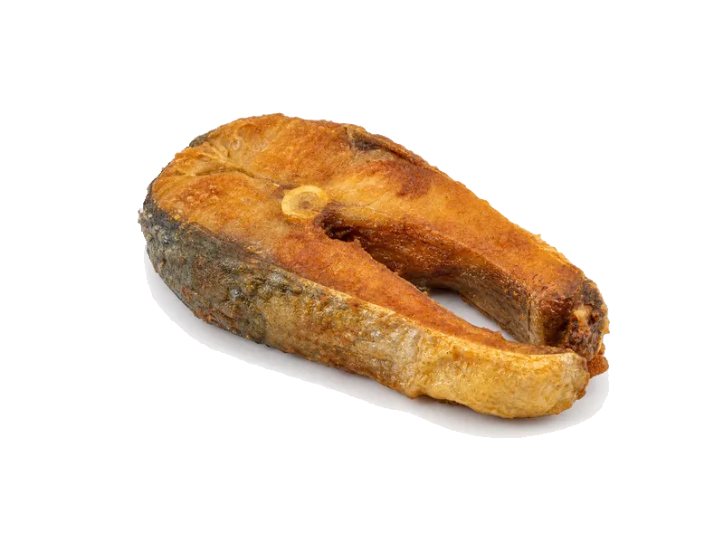

Mięsa i ryby
Karp smażony
Karp smażony: 18 g białka, 197 kcal, 6 g węglowodanów i 11 g tłuszczu na 100 g. Kategoria: Mięsa i ryby.
Kalorie197 kcalna 100 g
Białko / proteiny18 g
Węglowodany6 g
Tłuszcz11 g
Cena (szac.)~3,39 złza 100 g
Ceny zaktualizowano: maj 2026 (szacunek — ceny w popularnych supermarketach)
Porcja: porcja (150g)
| Kalorie | 296 kcal |
|---|---|
| Białko | 27 g |
| Węglowodany | 9 g |
| Tłuszcz | 16.5 g |
| Cena (szac.) | ~5,09 zł |
Szczegółowe składniki odżywcze na 100 g
| Wartość energetyczna (kalorie) | 197 kcal |
|---|---|
| Białko (proteiny) | 18 g |
| Węglowodany | 6 g |
| Tłuszcz | 11 g |
| Tłuszcze nasycone | 2.5 g |
| Tłuszcze nienasycone | 8.5 g |
| Witaminy i minerały | Fosfor, Żelazo, Cynk |
| Współczynnik kcal / 1 g białka | 10.9 |
| Cena produktu (szac. za 100 g) | ~3,39 zł |
| Cena za 100 g białka (szac.) | ~18,85 zł |